I tried several other dictionaries in the past, but no dictionary offers so many functions and is so handy as AEDICT
Thomas Klimek
japanisch-lernen.info
Irreplaceable. No alternatives to it...so stop searching for now, you have found what you have been looking for
dk aldossari
My major is Japanese and believe me, I have tested most of the dictionaries. This is easily the best app I have found. There is nothing you cannot do with this app! Get it now. Totally worth the few euros
Rasmus Rajasalo
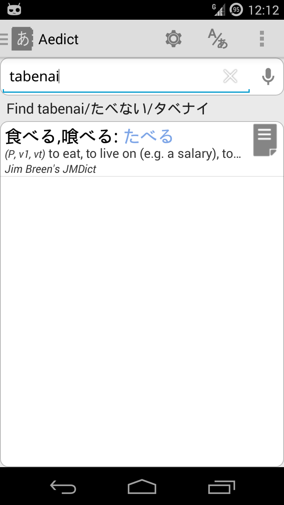
The Omnisearch bar allows search by kana, kanji, romaji and/or English, German, French, Russian, Dutch, Portugalese, Spanish, Hungarian, Slovene, Swedish. Deinflects verbs automatically.
Supports the Hepburn, Nihon-Shiki and Kunrei-Shiki romanizations. You can even use the integrated voice search to enter text.
Support for mixed kana and kanji (e.g. search for 見ため will also find 見た目)
Automatic vowel prolonging, e.g. しゅじん will also find しゅうじん.
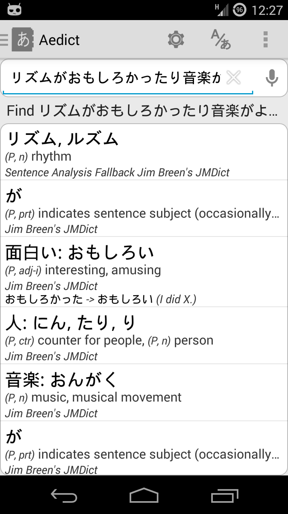
You can even drop entire sentences into the Omnisearch bar, to have them analyzed word-by-word, with automatic verb and adjective deinflection.
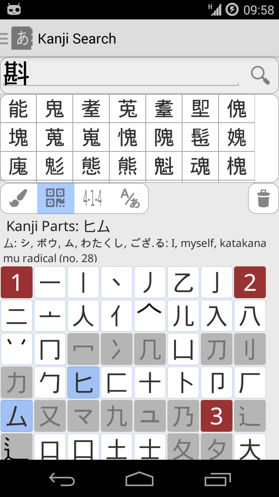
You can search kanjis by parts/radicals, SKIP code search and by kanji drawing. You can then show a verbose information about the kanji, including all readings and/or Hepburn (both ver. 3 and 6 are supported).
You can also search for multiple kanjis using any combination of the abovementioned methods, then you can search for all words containing given kanjis.
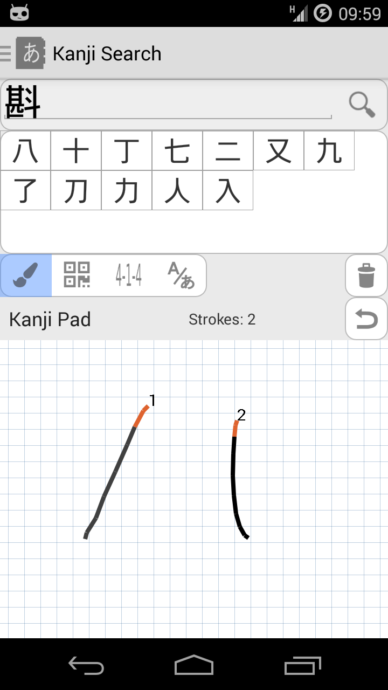
You can search for kanjis using the integrated kanji pad which is present in Aedict for free. You can also activate Aedict Ultimate to activate the better kanji pad recognition engine which is more accurate, more forgiving on the stroke order and has larger kanji database.
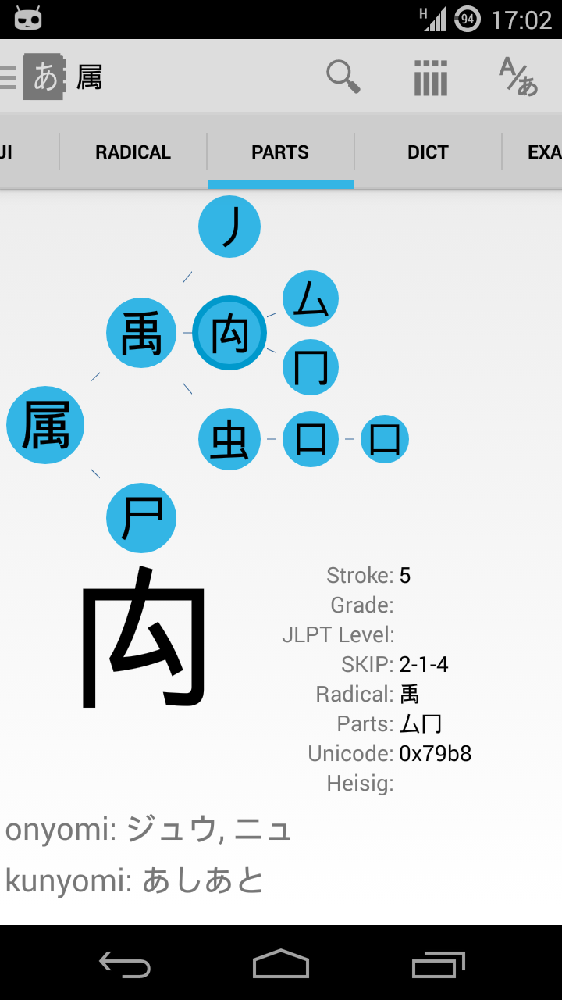
Shows all information about a kanji: all forms of readings including pinyin, Hepburn index, even splits the kanji into parts - you can then click the part to obtain information about the part, to gain insight on how the kanji si composed.
You can quickly search for words, or even example sentences, containing given kanji.
Currently, there is information for more than 13000 kanjis.
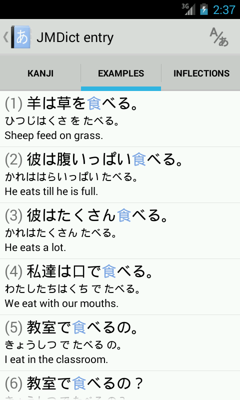
Aedict shows example sentences for kanjis and words. You can even perform a full word search in the example sentences.
By default, the example sentences are taken from the Tatoeba page. Additional Kotowaza proverbs dictionary may be downloaded for free.
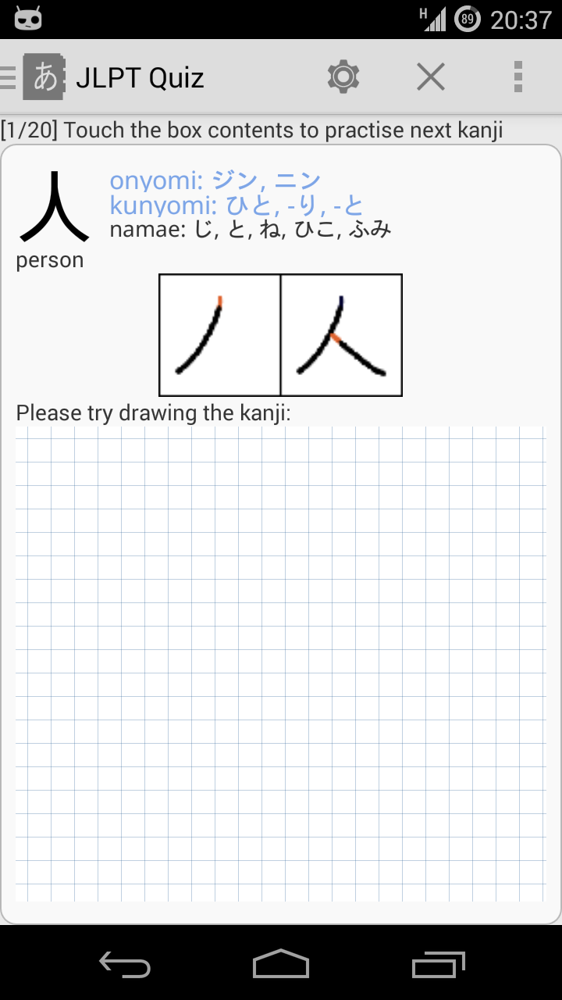
JLPT/Joyo Kanji Quizzes - you can practice by guessing kanji readings and/or the kanji itself, or you can practice by trying to draw the kanji. You can activate a simple SRS/Leitner algorithm - Aedict will remember incorrect answers and will offer to practice such kanjis more often.
You can store any entries you want in custom notepad list and practice these entries with the notepad quiz.
It is possible to add custom tags and colors to any dictionary entry
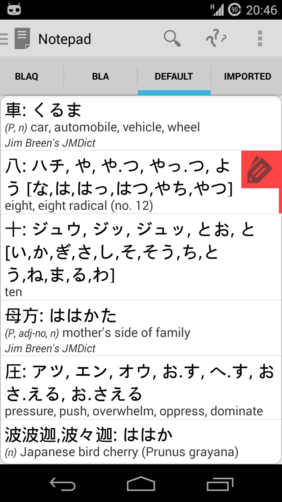
You can make your own lists and you can attach your own notes to words and kanjis.
You can even enable synchronization, to keep all of your devices in sync (not yet ready).
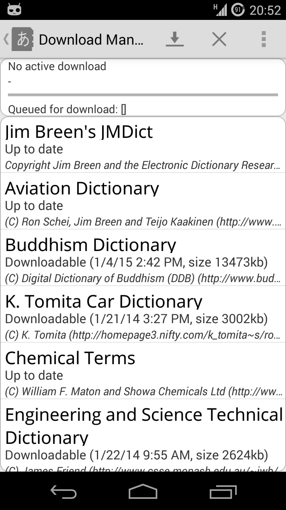
You can download many additional dictionaries for free, including Aviation Dictionary, Buddhism Dictionary, The Proper Names Dictionary, Kotowaza Proverbs Dictionary, Wadoku German Dictionary, Legal Terms Dictionary and many more.
Aedict by default includes Jim Breen's JMDict (Japanese words) Dictionary, Jim Breen's Kanjidic Dictionary, Tatoeba Example Sentences Dictionary and Stroke Order diagrams for 7500+ kanjis (courtesy of the KanjiVG project).
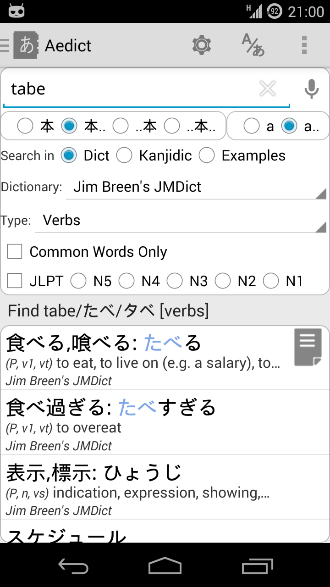
You can configure your search to search for words, kanjis and/or example sentences.
You can also narrow down your search by searching for verbs or adjectives only, for common words only, and for words containing kanjis from given JLPT level only.
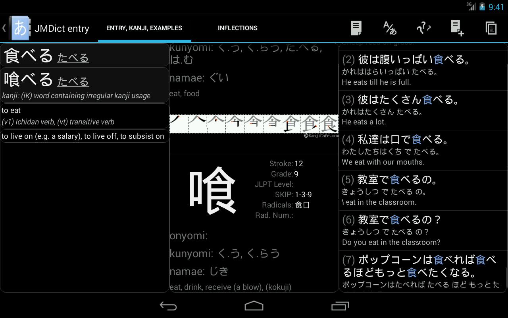
Aedict supports both phones and tablets: on tablets, the screen real estate is automatically used to show search results or more information about the entry.
A dark theme is also included, to improve readability at night.
Subscribe to Aedict Ultimate to unlock all Aedict features:
Read more in the Aedict Ultimate Article.
Aedict3 uses embedded Japanese font for proper character display
Optionally shows Romaji instead of hiragana/katakana
Samsung multi-window support
Shows verb and adjective conjugations
Export to AnkiDroid, CSV and text file. You can also use your own completely custom export format.
Continuous development - just let me know what you need and I will try to implement it
Customizable to your needs